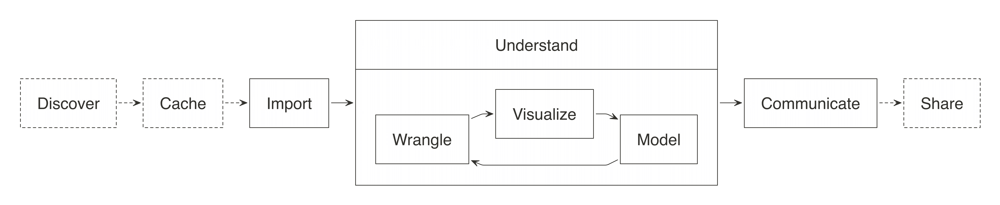

A typical Data Science project starts with importing data and finishes with communicating your results with others; however, some projects have a few additional steps that we will refer as: Discover, Cache and Share. While these steps might not deserve to be part of the official Data Science diagram, they can help us understand where the pins package can help.
Conceptually, the modified Data Science diagram looks as follows:

The pins package refers to arbitrary resources as pins, and refers to the action of caching a resource as pinning. A pin is something useful to have but not terrible to lose – you should always have reproducible code to regenerate a pin.
Let’s now introduce each operation the pins package supports.
pins package gives you a few tools to search well known data repositories through the pin_find() function. In addition, even though most projects have well-defined datasets to import from, you might also want to consider enhancing them with additional data sources; for example, while analyzing a well-known ice-cream sales dataset, you might want also want to find resources with historical weather to properly adjust the existing data.
download.file(); however, this would cause the file to be re-downloaded each time the code runs, so you can then try to check if the file already exists, and keep adding complexity to try to reliably download and cache files. Quoting Phil Karlton, “There are only two hard things in Computer Science: cache invalidation and naming things”. So instead of worrying when to invalidate and cache online resources, you can use pin() to cache any resource with ease.
pins package allows you to share resources in GitHub, Kaggle, RStudio Connect and allows you to create extensions to support many other services and technologies.
Before we present code examples on how to discover datasets, install the pins package as follows:
You can discover datasets with pin_find(), which by default will search for data inside CRAN packages. The places where pins can find or store resources are referred to as ‘boards’. There are multiple boards available but they require you to configure them so we will leave those for later on.
As a quick example, let’s search for resources that may contain ‘boston housing’:
# A tibble: 18,695 x 4
name description type board
<chr> <chr> <chr> <chr>
1 A3/housing Boston Housing Prices from A3 package. table packages
2 A3/multifunctionality Boston Housing Prices from A3 package. table packages
3 abc.data/musigma2 Boston Housing Prices from abc.data package. table packages
4 abc.data/ppc Boston Housing Prices from abc.data package. table packages
5 ABC.RAP/annotation_file Boston Housing Prices from ABC.RAP package. table packages
6 ABC.RAP/nonspecific_probes Boston Housing Prices from ABC.RAP package. table packages
7 ABC.RAP/test_data Boston Housing Prices from ABC.RAP package. table packages
8 ABCanalysis/SwissInhabitants Boston Housing Prices from ABCanalysis package. table packages
9 ABCp2/fungus Boston Housing Prices from ABCp2 package. table packages
10 ABCp2/newt Boston Housing Prices from ABCp2 package. table packages
# … with 18,685 more rowsWe’ve found out that the BSDA package contains a Housing dataset, you can then retrieve this dataset using pin_get() as follows:
# A tibble: 74 x 3
city year price
<chr> <fct> <int>
1 Albany 1984 52400
2 Anaheim 1984 134900
3 Atlanta 1984 64600
4 Baltimore 1984 65200
5 Birmingham 1984 66600
6 Boston 1984 102000
7 Chicago 1984 77500
8 Cincinnati 1984 59600
9 Cleveland 1984 65600
10 Columbus 1984 60400
# … with 64 more rowsMost datasets in CRAN contain rectangular data, which pins knows to load as a data frame. Other boards might contain non-rectangular datasets which pin_get() also supports. More on this later on, but first, lets introduce caching.
Let’s suppose that the ‘home prices’ dataset is not exactly what we are looking for, we can try to search online for ‘home prices’ and find out that catalog.data.gov contains a more suitable FHFA House Price Indexes dataset. Instead of giving users explicit instructions to download the CSV file, we can instead use pin() to cache this dataset locally:
[1] "/Users/username/Library/Caches/pins/local/HPI_master/HPI_master.csv"Notice that the pin returns a path to a local CSV file, which you are free to load with your favorite package.
library(readr)
pin("http://www.fhfa.gov/DataTools/Downloads/Documents/HPI/HPI_master.csv") %>%
read_csv(col_types = cols())# A tibble: 108,826 x 10
hpi_type hpi_flavor frequency level place_name place_id yr period index_nsa
<chr> <chr> <chr> <chr> <chr> <chr> <dbl> <dbl> <dbl>
1 traditi… purchase-… monthly USA … East Nort… DV_ENC 1991 1 100
2 traditi… purchase-… monthly USA … East Nort… DV_ENC 1991 2 101.
3 traditi… purchase-… monthly USA … East Nort… DV_ENC 1991 3 101.
4 traditi… purchase-… monthly USA … East Nort… DV_ENC 1991 4 102.
5 traditi… purchase-… monthly USA … East Nort… DV_ENC 1991 5 102.
6 traditi… purchase-… monthly USA … East Nort… DV_ENC 1991 6 103.
7 traditi… purchase-… monthly USA … East Nort… DV_ENC 1991 7 103.
8 traditi… purchase-… monthly USA … East Nort… DV_ENC 1991 8 103.
9 traditi… purchase-… monthly USA … East Nort… DV_ENC 1991 9 103.
10 traditi… purchase-… monthly USA … East Nort… DV_ENC 1991 10 103.
# … with 108,816 more rows, and 1 more variable: index_sa <dbl>The pins package tries to be smart about downloading files only when the file has changed, you can skip the details on how this works but you should know you can set download = TRUE to force pins to download the file again even if we think it has not changed. The specific mechanisms pins uses are based on HTTP headers like cache-control and ETag to avoid downloading files when they have not changed or when the cache has not expired.
Notice that pin() assigned a name automatically, HPI_master for the previous example; however, you can choose your own name and be explicit about retrieving a pin with pin_get():
pin("http://www.fhfa.gov/DataTools/Downloads/Documents/HPI/HPI_master.csv",
name = "home_price_indexes")
pin_get("home_price_indexes") %>%
read_csv(col_types = cols())# A tibble: 108,826 x 10
hpi_type hpi_flavor frequency level place_name place_id yr period index_nsa
<chr> <chr> <chr> <chr> <chr> <chr> <dbl> <dbl> <dbl>
1 traditi… purchase-… monthly USA … East Nort… DV_ENC 1991 1 100
2 traditi… purchase-… monthly USA … East Nort… DV_ENC 1991 2 101.
3 traditi… purchase-… monthly USA … East Nort… DV_ENC 1991 3 101.
4 traditi… purchase-… monthly USA … East Nort… DV_ENC 1991 4 102.
5 traditi… purchase-… monthly USA … East Nort… DV_ENC 1991 5 102.
6 traditi… purchase-… monthly USA … East Nort… DV_ENC 1991 6 103.
7 traditi… purchase-… monthly USA … East Nort… DV_ENC 1991 7 103.
8 traditi… purchase-… monthly USA … East Nort… DV_ENC 1991 8 103.
9 traditi… purchase-… monthly USA … East Nort… DV_ENC 1991 9 103.
10 traditi… purchase-… monthly USA … East Nort… DV_ENC 1991 10 103.
# … with 108,816 more rows, and 1 more variable: index_sa <dbl>You can enable download progress with the pins.progress option and print additional caching information using the pins.verebose option:
# print verbose upload and download progress
options(pins.progress = TRUE)
# print verbose pins info
options(pins.verbose = TRUE)